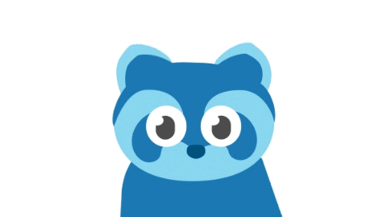

Bring the world closer—one sign at a time
GET STARTED
 LEARN BISINDO
LEARN BISINDO
LEARN BISINDO
LEARN BISINDO
Signlingu is a volunteer-driven platform designed to make learning sign language accessible and fun for everyone. Our mission is to create a society that is comfortable for sign language users. By learning sign language, we help break down barriers and build a more inclusive, connected world.
At Signlingu, we believe in learning through repetition. Our exercise focuses on reinforcing memory and ensuring that users can recall signs before they practice acting them out on their own. This method helps you build a solid foundation for long-term retention.
Signlingu is a team of passionate volunteers from diverse backgrounds, dedicated to providing 100% free sign language resources to support our mission of connecting the world.